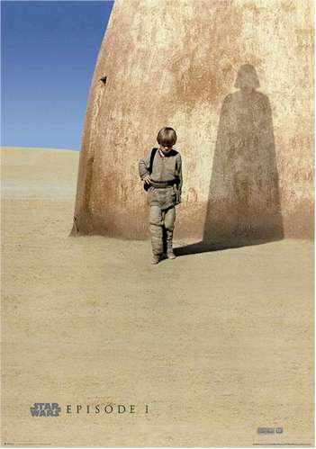

Star Wars (Brasil: Guerra nas Estrelas / Portugal: Guerra das
Estrelas) é uma franquia do tipo space opera estadunidense criada pelo
cineasta George Lucas, que conta com uma série de nove filmes de
fantasia científica e dois spin-offs.
George Lucas, o criador da série Star WarsHistória
A série teve início com o simples título Star Wars, escrito e
dirigido por George Lucas, lançado em 25 de maio de 1977. Na época
da sua estreia se tornou a maior bilheteria de todos os tempos,
arrecadando US$ 775 398 007 milhões de dólares e ganhando sete
prêmios no Óscar.
A 20th Century Fox desacreditando um filme que ambientado no espaço,
permitiu que George Lucas tivesse todos os direitos do filme. O
sucesso garantiu a ele dinheiro suficiente para abrir sua própria
empresa cinematográfica: a Lucasfilm e, o filme foi transformado em
uma franquia e série, ganhando produtos derivados.
Episódios
Esta é uma lista de filmes e séries televisivas da franquia
cinematográfica Star Wars. A série cinematográfica que abrange
diversos filmes live-action e filmes animados teve início na década
de 1970 com uma trilogia narrada in medias res que, posteriormente,
foi expandida para mais duas trilogias conhecidas coletivamente como
"Saga Skywalker"

Star Wars - Episódio Um
O filme homônimo de 1977 - posteriormente
comercializado como Episode IV – A New Hope ou Episódio IV – Uma
Nova Esperança - foi sucedido por The Empire Strikes Back (1980) e
Return of the Jedi (1983) formando a chamada "Trilogia Original". Na
década de 1990, após um hiato de mais de uma década, a "Trilogia
Prequela" foi iniciada com The Phantom Menace (1999) e concluída com
Attack of the Clones (2002) e Revenge of the Sith (2005). Após a
aquisição dos direitos de produção da franquia pela The Walt Disney
Company em 2012, a companhia lançou a "Trilogia Sequela" composta
por Star Wars: The Force Awakens (2015), The Last Jedi (2017) e The
Rise of Skywalker (2019).